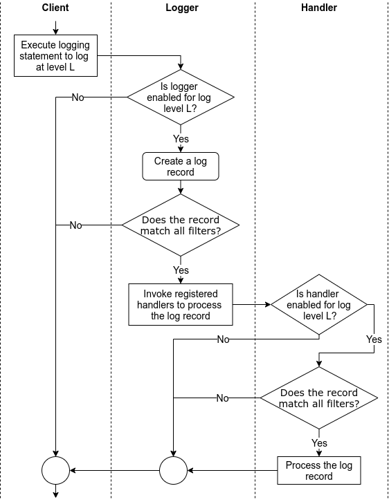

Python
Iterable vs Iterator
- iterator is an object that implements the magic
__next__method - iterable implements both the
__next__and__iter__(return iterator)
# list_1 is iterable, it can be used in a for-loop
list_1 = range(3)
# iter_list_1 is an iterator, it cannot be used in a for-loop, but can use iter_list_1.next() to iterate
iter_list_1 = iter(list_1)
Enumerate
- Instead of using index to loop a list, use enumerate:
Enum
- Use
IntEnumif you need to compare the value of the Enum - Add
@uniqueif the value is unique
Dict
- Use
defaultdictfor default value during initialization - Use
namedtuplefor having a tuple-like object, without defining a class. i.e.
from collections import namedtuple
Student = namedtuple("Student", field_names=["name", "age", "scores"])
# Create an instance of the one-line namedtuple class.
student = Student(name="John", age=15, scores=["A", "B", "B", "C", "C", "C"])
# The type is a class.
type(student)
# __main__.Student
# We can access values by indexes like a tuple.
student[0] # John
# Convert namedtuple to dict using _asdict method
student._asdict()
- Use pydantic whenever possible
Exception Handling
- Be specific as possible
- Print traceback, i.e.
Styling
- Use black, mypy, flake, isort to ensure correct linting and styling in place for code
- Set up git hook (pre-commit, commit-msg and pre-push) to ensure code is checked on client side before pushing to remote repo
Logging
